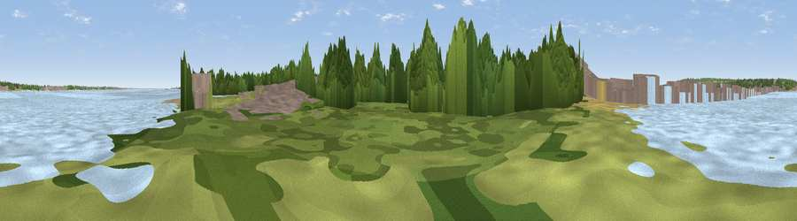

Humber Bridge Viewpoint
#41357 in England · top 86% of its area beats it · near Barton-upon-HumberThe view, rendered

A 360° render of this exact spot computed from the terrain model, tree cover and land cover — summer colours, afternoon light, calibrated against photographs of famous viewpoints. Real trees, hedges and buildings will differ in detail.
The panorama
Grey silhouette: terrain skyline in each direction (720 bearings, Earth curvature and refraction included). Dashed green: skyline with trees (+15 m) and buildings (+8 m) as obstacles. Blue strip: how far the ground is visible on each bearing.
Where the view opens
Wedge length = distance to the farthest visible ground on that bearing (vegetation-aware). Rings at 10, 25 and 50 km.
What fills the view
40% water · 24% woodland · 14% built-up · 12% grassland · 9% cropland · 1% bare ground
Angular shares of the visible panorama (visual magnitude), not map area. Landscape diversity 0.66 (0–1 Shannon).
Key numbers
More beautiful places nearby
The staircase of upgrades: each row has a higher view potential than everything closer. Driving times are estimates from straight-line distance, calibrated against real road routing — check an actual route before setting out.
| Place | Direction | Drive | Score |
|---|---|---|---|
| Viewpoint near Hessle | N · 2 km | ~6 min | 47.5 |
| Viewpoint near Hessle | NNW · 3 km | ~8 min | 50.4 |
| Viewpoint near South Ferriby | SW · 4 km | ~10 min | 58.1 |
| Viewpoint near South Cave | NW · 13 km | ~24 min | 60.9 |
| Viewpoint near South Newbald | NW · 15 km | ~26 min | 62.3 |
| Viewpoint near South Newbald | NW · 15 km | ~26 min | 64.9 |
| Viewpoint near Claxby | SSE · 28 km | ~44 min | 70.5 |
| Viewpoint near Claxby | SSE · 29 km | ~46 min | 71.5 |
53.69716, -0.44570 · source: osm viewpoint · position refined by local search. Computed location — check access rights before visiting.